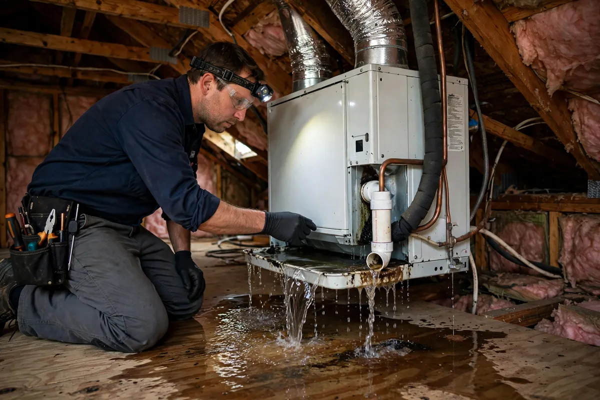

HVAC Condensate Overflow Cleanup in Hollywood, FL
Every cooling cycle wrings moisture out of your home's air, and the condensate drain line carries it away — until algae and sludge choke the line shut. Then the overflow pan fills, spills over, and the ceiling below starts staining. HVAC condensate cleanup deals with this slow, hidden drip: extracting the water, drying the ceiling cavity and insulation, and making sure the area around your air handler is truly dry, not just wiped down.

Understanding HVAC Condensate Overflow Cleanup in Hollywood
A condensate clog rarely announces itself. The first sign is usually a yellow-brown stain blooming on the ceiling beneath an attic or closet air handler, or a musty smell that drifts out whenever the system runs. Inside the line, a slimy mix of algae, dust, and microbial growth narrows the pipe until water backs up into the emergency pan. If the pan's float switch has failed or was never installed, the water simply keeps coming — soaking drywall, saturating insulation, and dripping onto the air handler platform.
Because South Florida air conditioners run most of the year, a clogged line can release a surprising volume of water before anyone notices. The damage pattern is distinctive: soft, sagging ceiling drywall, compressed insulation that has lost its loft, and sometimes rust forming on the pan itself. Drying matters as much as unclogging — insulation that stays damp becomes a long-term odor source, and ceiling cavities with poor airflow can hold moisture for weeks after the visible drip stops.
How We Handle the Job
The air handler gets shut down first so the drip stops at the source. Standing water is extracted from the pan and surrounding surfaces, and the visibly damaged ceiling material is assessed — drywall that has sagged or softened is typically cut out rather than dried in place, since it rarely regains its strength. Moisture readings are taken in the ceiling cavity and nearby insulation to map how far the dampness traveled, then air movers and dehumidification dry the framing and remaining materials while the condensate line itself gets cleared.
You'll hear from us at each stage: what the readings showed, what was removed, and what verified dry. When a loss involves more than the condensate line, related work such as emergency water extraction, structural drying, or flood cleanup may be part of the same job, and we'll say so plainly rather than bundling services you don't need.
Local Response and Insurance Support
Searching for hvac condensate overflow cleanup near me usually means you need help without delay. We answer emergency calls around the clock. Documentation — photos and moisture readings — supports conversations with your insurance carrier when the loss is sudden and accidental. We do not decide coverage; we provide clear technical information about the work performed.
When to Call
Call if you have active water, wet materials that are not drying, odors after a leak, or a backup that may involve contaminated water. Early action in Hollywood’s climate is almost always less disruptive than waiting. For neighborhood-specific service, see our service areas. For the full list of capabilities, visit all services.
Frequently Asked Questions
How do I know my condensate line is clogged?
The classic signs are a water stain spreading on the ceiling below the air handler, a drain pan you can see is full of water, a musty odor when the cooling runs, or the system shutting itself off because the float switch tripped. Any of those means water is going somewhere it shouldn't.
Is condensate water clean or dirty?
It starts as pure condensation, but by the time it backs up it has traveled through a slimy drain line and a stagnant pan — so we treat it with caution, especially where it has soaked into porous materials like drywall and insulation.
Will my ceiling need to be replaced?
It depends on how saturated it is. Drywall that has sagged, bubbled, or softened usually gets cut out and replaced after drying. Material that only picked up surface dampness can often be dried in place and verified with a meter.
How do I keep this from happening again?
Condensate lines need periodic clearing — algae regrows in dark, damp pipes. It also helps to confirm the emergency pan is intact, the float switch works, and the line has proper slope so water doesn't sit in it.